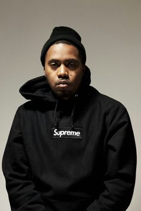

NASSIR JONES
King, gotta learn to let it go and move forward King, you should learn to say no, keep all your dough in King, Michael Jordan gives back and you didn't know it Like LeBron does, but it's just seldomly shown King, get ten points from one bird doin' your thing King, 'til one of your homies decide to sing King, I started sayin' "Peace King" on my song "The Flyest" And after that, it took off like fire, peace, King They hardly happy for you, keep doing what you do You can't please everybody, and not everybody is you Don't try to force a square peg in a round circle, that shit'll hurt you Don't try to fit in either, you're better off with neither Few veteran speakers get medicine when you need it Especially when we all need knowledge instead of sneakers Stop hangin' on to childhood trauma, it defeats us Our challenge is holding ourselves back, I hope you felt that Queen, gotta learn to let it go and move forward Queen, you should learn to say no, keep all your dough in Queen, Michael Jordan gives back and you didn't know it Like LeBron does, but it's just seldomly shown Queen, get ten points from one bird doin' your thing Queen, 'til one of your homies decide to sing Queen, I started saying "Peace King" on my song "The Flyest" And after that, it took off like fire, peace, Queen"
 Nas
JERMAINE LAMARR COLE
"Yeah, my intuition is telling me there'll be better days I sit in silence and find whenever I meditate My fears alleviate, my tears evaporate My faith don't deviate, ideas don't have a date But see I'm growing and getting stronger with every breath Bringing me closer to heaven's doors with every step As we speak I'm at peace, no longer scared to die Most niggas don't believe in God and so they terrified It's either that or they be fearing they gon' go to Hell Asking the Father for forgiveness, got 'em overwhelmed As if He's spiteful like them white folks that control the jail See I believe if God is real He'll never judge a man Because He knows us all and therefore He would understand The ignorance that make a nigga take his brother's life The bitterness and pain that got him beating on his wife I know you desperate for a change let the pen glide But the only real change come from inside."
J.Cole
KENDRICK LAMAR DUCKWORTH
"I feel niggas been out of pocket I feel niggas tappin' they pockets I feel like debated on who the greatest can stop it I am legend, I feel like all of y'all is peasants I feel like all of y'all is desperate I feel like all it take is a second to feel like Mike Jordan whenever holdin' a real mic I ain't feelin' your presence Feel like I'ma learn you a lesson Feel like only me and the music, though I feel like your feelin' ain't mutual I feel like the enemy you should know Feel like the feelin' of no hope The feelin' of bad dope A quarter ounce manipulated from soap The feelin', the feelin' of false freedom I'll force-feed 'em the poison that fill 'em up in the prison I feel like it's just me Look, I feel like I can't breathe Look, I feel like I can't sleep Look, I feel heartless, often off this Feelin' of fallin', of fallin' apart with Darkest hours, lost it Fillin' the void of bein' employed with ballin' Streets is talkin', fill in the blanks with coffins Fill up the banks with dollars Fill up the graves with fathers Fill up the babies with bullshit Internet blogs and pulpit, fill 'em with gossip I feel like this gotta be the feelin' what 'Pac was The feelin' of an apocalypse happenin' But nothin' is awkward, the feelin' won't prosper The feelin' is toxic, I feel like I'm boxin' demons Monsters, false prophets schemin' Sponsors, industry promises Niggas, bitches, honkies, crackers, Compton Church, religion, token blacks, and bondage Lawsuit visits, subpoena served in concert Fuck your feelings, I mean this for imposters I can feel it, the phoenix sure to watch us I can feel it, the dream is more than process I can put a regime that forms a Loch Ness I can feel it, the scream that haunts our logic I feel like say somethin', I feel like take somethin' I feel like skatin' off, I feel like waitin' for 'em Maybe it's too late for 'em I feel like the whole world want me to pray for 'em But who the fuck prayin' for me?"
Kendrick Lamar